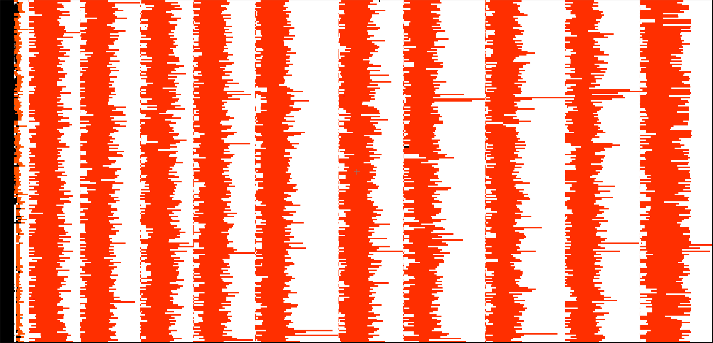
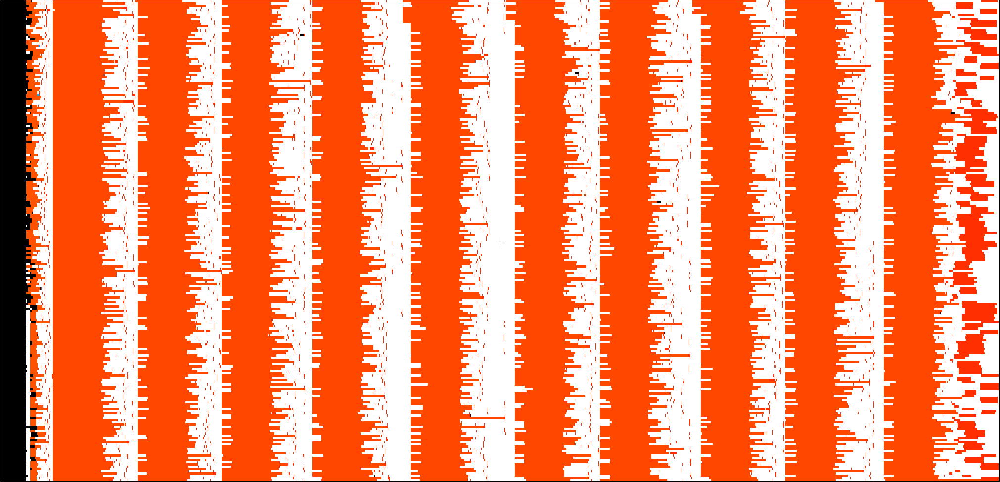
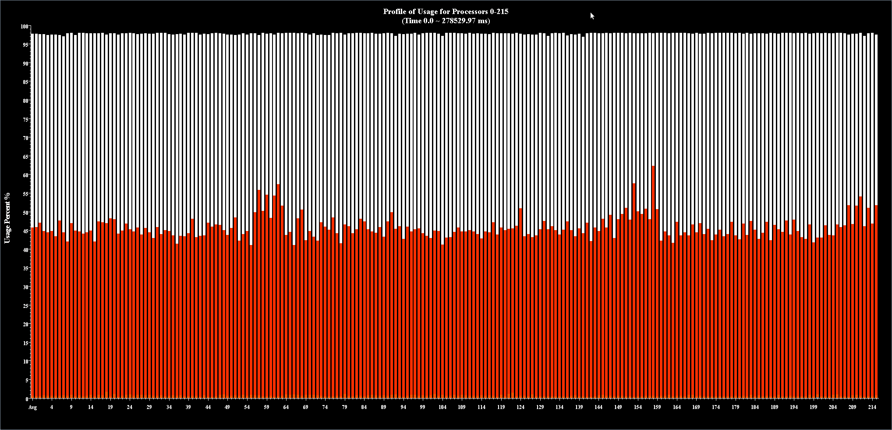
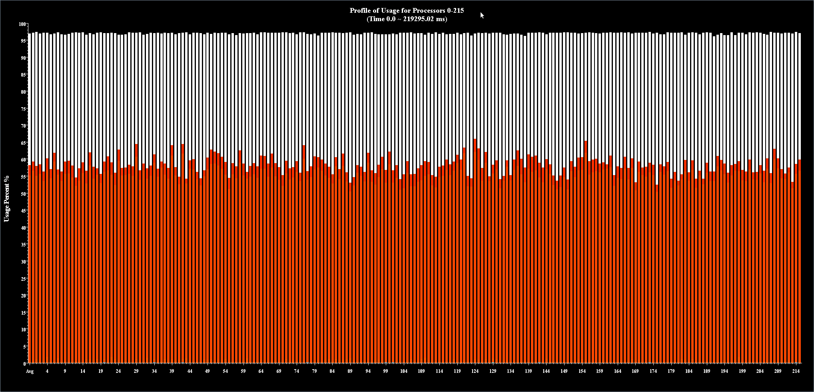
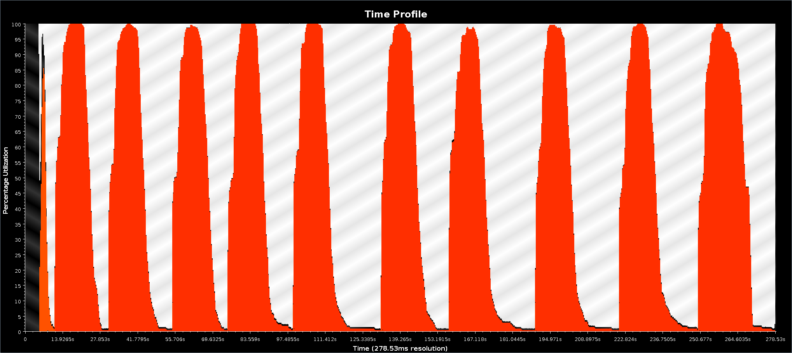
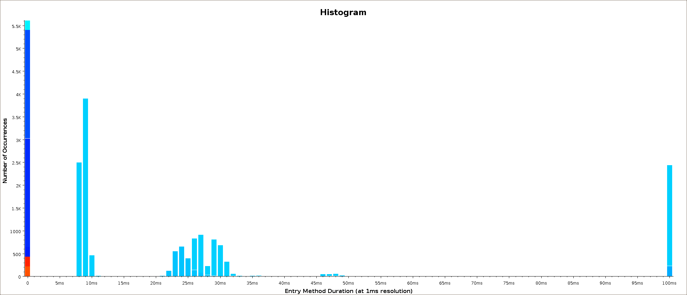
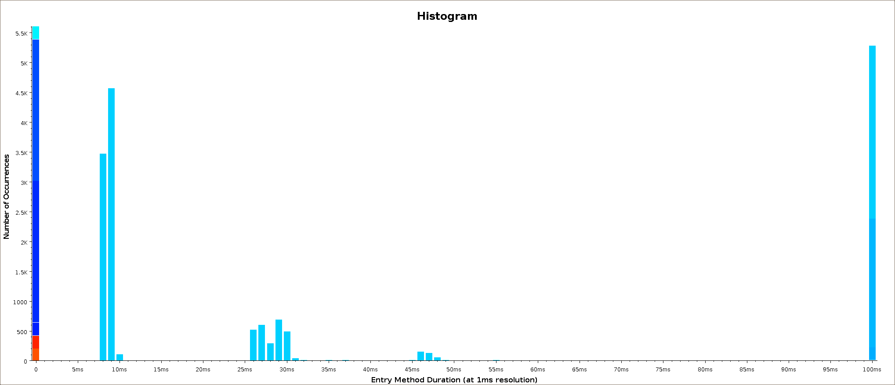

Cello Performance
Document Version: Rev: 1824
James Bordner
San Diego Supercomputer Center
Laboratory for Computational Astrophysics
University of California, San Diego








File translated from
TEX
by
TTH,
version 3.85.
On 21 Jun 2011, 18:06.